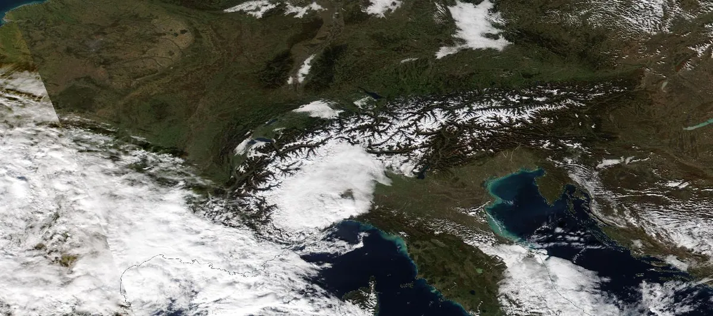

الفيزياء اللي ورا الجو: واد فالسما (نهر جوي) ف Andermatt
ف Andermatt (2963 م) التوقعات كتعطي 75 مم ديال الشتا من 15 نونبر حتى ل 20 نونبر. فالسوايع اللي فيهم الشتا، علو 0 °C كيكون تقريبا 2160 م، يعني الحد ديال التلج تقريبا 1860 م.
شوف توقعات التلج مباشرة ديال Andermatt فالتطبيق ديال SnowScopeالعلو ديال التلج، التنبيهات والخريطة 3D، فابور.
شنو كتبين التوقعات
ف Andermatt (2963 م) التوقعات كتعطي 75 مم ديال الشتا من 15 نونبر حتى ل 20 نونبر. فالسوايع اللي فيهم الشتا، علو 0 °C كيكون تقريبا 2160 م، يعني الحد ديال التلج تقريبا 1860 م.

الفيزياء
النهر الجوي هو شريط طويل وضيق ديال الهوا كيهز بزاف ديال البخار ديال الما. فوق 250 كغ ديال الما فكل متر وفكل ثانية كنقولو نهر جوي، وفوق 750 نهر جوي قوي. ملي كيضرب فالجبال، الهوا خاصو يطلع ويبرد، البخار كيتكثف والجهات اللي مقابلة للريح كتاخد أكثر شتا وتلج.

شنو كيعني هادشي ليك
- التوقعات كتبدل: عاود شوف الخريطة ديال التلج قبل ما تخرج.
- برا البيست: ديما قرا النشرة الرسمية ديال الانهيارات.
المراجع والمصادر
- Ralph, F. M., Dettinger, M. D., Cairns, M. M., Galarneau, T. J. and Eylander, J. (2018). Defining 'atmospheric river': how the Glossary of Meteorology helped resolve a debate. Bulletin of the American Meteorological Society 99, 837-839. doi.org/10.1175/BAMS-D-17-0157.1
- Ralph, F. M., Rutz, J. J., Cordeira, J. M., Dettinger, M. D. et al. (2019). A scale to characterize the strength and impacts of atmospheric rivers. Bulletin of the American Meteorological Society 100, 269-289. doi.org/10.1175/BAMS-D-18-0023.1
- American Meteorological Society, Glossary of Meteorology: 'Atmospheric river'. glossary.ametsoc.org/wiki/Atmospheric_river
- Roe, G. H. (2005). Orographic precipitation. Annual Review of Earth and Planetary Sciences 33, 645-671. doi.org/10.1146/annurev.earth.33.092203.122541
- Minder, J. R., Durran, D. R. and Roe, G. H. (2011). Mesoscale controls on the mountainside snow line. Journal of the Atmospheric Sciences 68, 2107-2127. doi.org/10.1175/JAS-D-10-05006.1
- Wallace, J. M. and Hobbs, P. V. (2006). Atmospheric Science: An Introductory Survey, 2nd edition. Academic Press / Elsevier. ISBN 978-0-12-732951-2.
- Forecast data: Open-Meteo.com (CC BY 4.0), from the ECMWF IFS (CC BY 4.0), DWD ICON and NOAA GFS models; snow depth: SnowScope snow model. open-meteo.com/
على هاد الأرقام
الأرقام من التوقعات ديال 15 نونبر: الشتا، الحرارة والريح فبزاف ديال العلوات فالبلايص المذكورة. علو 0 °C محسوب من الحرارة حسب العلو؛ الحد ديال التلج تقريبا 300 م تحتو. التوقعات كتبدل.
كيفاش تستاشهد بهاد المقال
للبحث، التعليم ولا الصحافة: الأرقام والرسومات تقدر تعاود تخدم بيهم بحرية تحت CC BY 4.0 مع هاد الاستشهاد.
SnowScope (2026), الفيزياء اللي ورا الجو: واد فالسما (نهر جوي) ف Andermatt, https://snowscope.app/blog/ar/2026/11/alps-physics-an-atmospheric-river-15-november-2026.html, تشاف ف 2026-11-15
SnowScope (Atlas Labs). (2026, November 15). الفيزياء اللي ورا الجو: واد فالسما (نهر جوي) ف Andermatt. SnowScope snow reports. https://snowscope.app/blog/ar/2026/11/alps-physics-an-atmospheric-river-15-november-2026.html
BibTeX
@misc{snowscope2026alpsphysicsanatmospheric,
author = {{SnowScope (Atlas Labs)}},
title = {الفيزياء اللي ورا الجو: واد فالسما (نهر جوي) ف Andermatt},
year = {2026},
month = nov,
howpublished = {\url{https://snowscope.app/blog/ar/2026/11/alps-physics-an-atmospheric-river-15-november-2026.html}},
note = {Published 2026-11-15 17:57 UTC; accessed 2026-11-15}
}· CC BY 4.0 · الطريقة، الداتا والأدوات →
تابع Andermatt
فابور: ميساج ملي يجي التلج، والتوقعات كل صباح.
تقارير أخرى ديال التلج

Valloire-Valmeinier كتوفر على 131 كم ديال البيست، واحتمال 98 % يكون العلو ديال التلج 30 سم فـ وسط المحطة فـ نص دجنبر.

Turracher Höhe فدجنبر: 23 سم فالوسط نهار 15 دجنبر عادي، 39 % ديال الشتوات فيهم 30 سم قبل نوال؛ 6 أيام فالموسم الهادي ب 353 EUR.

اكتشف البيستات الهادئة فـ St-Luc Chandolin فين العلو ديال التلج فـ نص الجبل وصل لـ 30 سم فـ 98 % من الشتوات اللي فاتو فـ أواخر شهر دجنبر.